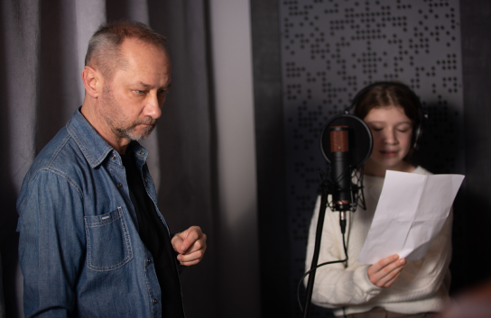

Nazywam się Tomasz „Zuber” Kamiński, jestem realizatorem dźwięku z wieloletnim
doświadczeniem w branży muzycznej, sięgającym początku lat dziewięćdziesiątych.
Współpracowałem z wieloma czołowymi artystami i zespołami – takimi jak: T.Love, Izrael, Armia,
Brgada Kryzys, DAAB, VooVoo, 2TM 2,3, Maleo Reggae Rockers, Houk, Tilt, Tomek Lipiński,
Semantic Pank. Wiele lat współpracowałem także z największymi polskimi firmami
nagłośnieniowymi podczas realizacji festiwali muzycznych, koncertów, eventów, imprez
okolicznościowych.


Wykorzystując swoje ponad trzydziestoletnie doświadczenie stworzyłem własne studio nagraniowe,
w którym zajmuję się rejestracją śladów audio, edycją nagranego materiału, zgraniem nagranych
śladów, montażem i masteringiem. Przy użyciu dostępnych narzędzi możliwe jest również
tworzenie muzyki, realizacja nagrań lektorskich oraz audiobooków.
Zapraszam serdecznie do współpracy